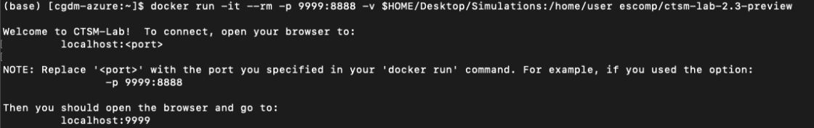
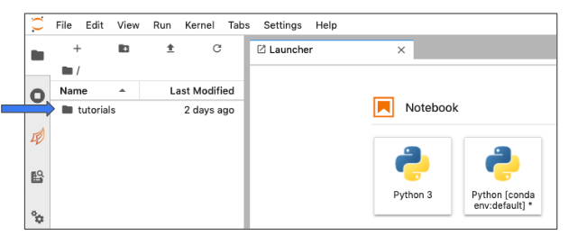

Getting started with the CESM Lab container¶
The following instructions describe how to download Docker, get the CESM-Lab container, and run the CESM-Lab for NEON tower sites.
If you prefer to see a slide deck with more images, see this Docker Tutorial.
In this tutorial:
Download and install Docker
Download the CESM-Lab container within Docker
Set up a directory where simulations will be stored on your computer
Run and connect to the CESM-Lab container
Access the NEON Tower Simulation tutorial
End your session
Steps 1-3 only need to be completed once. You can continue to use the container system starting at step 4.
If you already have Docker installed on your computer, start at Step 2.
1. Download & Install Docker¶
Docker is available for free from this website.
Follow the instructions to install the Docker Desktop App. The Getting Started guide on Docker has detailed instructions for setting up Docker on Mac, Windows, or Linux.
Tip
To access the container, you can interface with Docker using the Desktop App or using a command line.
Note
If you have trouble installing the latest Docker, please try Docker 3.x. Some newer versions of Docker may be incompatible with your operating system.
See also
If you are unfamiliar with Docker or are having trouble, you may find the following links helpful:
2. Download the CESM-Lab Container¶
This only needs to be done one time – you can keep using this container any time you run NEON simulations. Please note that this step can take a little time as it will download ~5GB of data (time will vary based on internet speed).
2.1. Getting CESM-Lab: using a Linux command-line¶
Mac: find “Terminal” in your Utilities
Windows: Run the ‘PowerShell’ from the Start menu
2.2. Download the CTSM Docker Container¶
In your Terminal or PowerShell window, type:
docker pull escomp/ctsm-lab-2.3-preview
Note
Docker needs to be running on your computer before using the docker pull command above.
You can run Docker by either opening the app or typing “docker login” in the command line.
3. Set up a directory for your simulations¶
This step is used to create a directory that will map into the container. The directory will store all the files required to run a simulation so that it does is saved when you exit the container.
3.1. Create a location for the container¶
These instructions create a new folder Simulations on your desktop.
You may customize the name and location of the folder. If you change the name or location you will need to update the container location in the next step.
In your terminal or PowerShell window, type:
mkdir $HOME/Desktop/Simulations
Confirm that this step worked properly. Do you see the Simulations folder on your desktop?
4. Run & connect to CESM-Lab container¶
To access CESM-Lab, you need to first run or launch the container and then connect to it.
The next steps launch the container (4.1) and then ‘forwards’ a web browser to it (4.2), with descriptions included below the commands to help understand what it is doing. Note that this step uses the command line to run the container (recommended).
If you prefer to use the GUI interface within the Docker App, see the alternate instructions (Step Alt. 4a) towards the end of this tutorial.
There are two options for running the container.
4.1. Running CESM-Lab using a Linux command-line¶
In your terminal or PowerShell window, type:
docker run -it --rm -p 9999:8888 -v $HOME/Desktop/Simulations:/home/user escomp/ctsm-lab-2.3-preview
Description of some flags or options that are available for running the docker run:
-it --rm= ‘Ease-of-use’ options: interactive & clean-up-p= Port number-v= Directory to mount into the container (first half), and the container’s mount location"escomp/ctsm-..."= Container Image Name
Your terminal screen will show the following:

Note
Note that you can change the first part of the port number (9999) to a different number to run multiple instances of the container, but you will need to change the port number in the next step.
4.2. Connect to CESM-Lab using a web browser¶
Open a new web browser window.
In the search bar type:
localhost:9999
Note
This connects to an interface. Note the ‘9999’ at the end of this number is the same as the beginning of the port in step 4 above.
If you launch more than one container at a time, you will need to change the port number.
5. Accessing the NEON Tower Simulation Tutorial¶
Your browser window will open a Jupyter Notebook environment.
Double-click on the
tutorialsfolder on the left, thenOpen the
NEON_Simulation_Tutorial

Follow the tutorial instructions to run a NEON tower site simulation.
Once you complete this tutorial, you can use the NEON_Visualization_Tutorial to explore and evaluate the data.
Tip
If you want to access the container again in the future and do not end your session, you can open a web browser and point to the container (Step 4.2).
If you end your session (Step 6) or restart your computer, you can restart the container from Step 4.
6. Ending your session¶
When you are ready to close your session, you will need to identify and kill your terminal sessions.
Identify active sessions by typing the following into terminal:
docker ps
Note
You may need to open a new terminal window to do the following command.
Once the container ID has been identified, kill the job by typing the following into terminal:
docker kill <session ID>
If the docker run command was not run in the background, you might find
that you cannot type anything into the open terminal window. Either open
a new terminal window to identify and kill sessions, or you can use
ctrl+c to kill all active sessions.
See also
Need help with the CESM-Lab container?
Post your questions on the Containers forum in the CESM Bulletin Board (https://bb.cgd.ucar.edu/cesm/forums/containers-cloud-platforms.162/). Note that this resource will require you to register and log in so that you can be notified of responses to your inquiries.